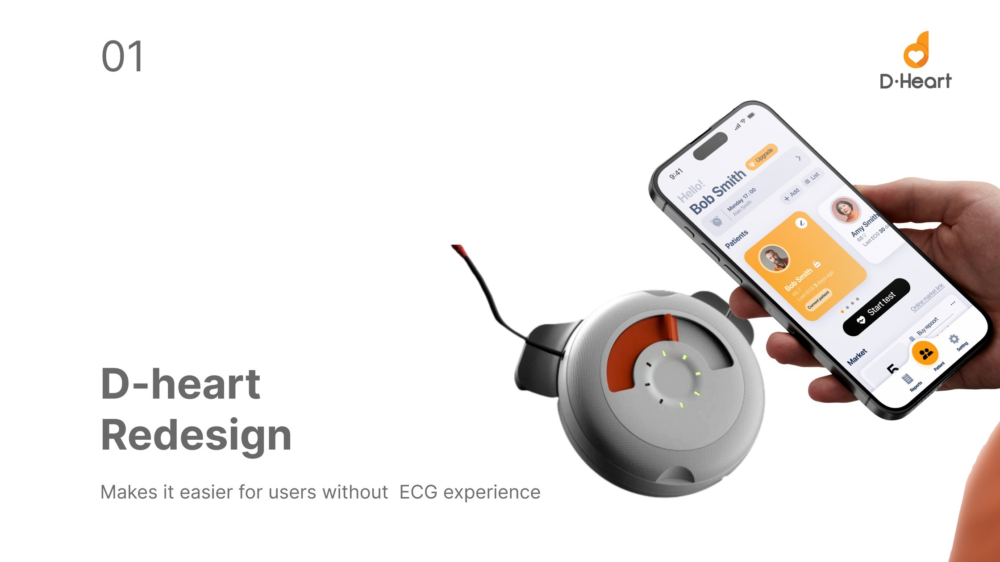
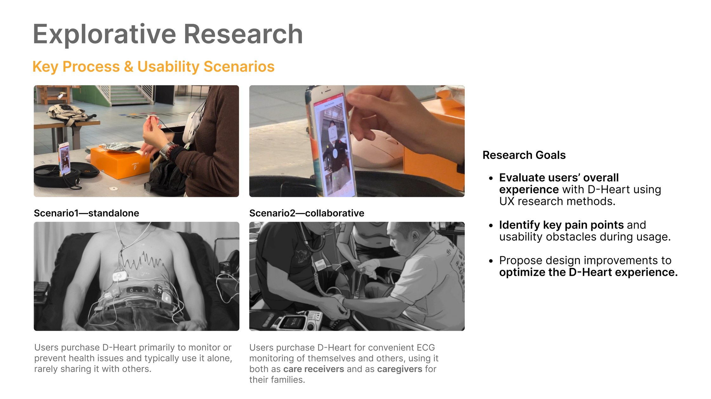
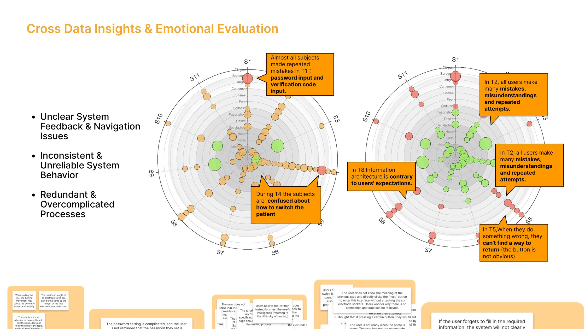
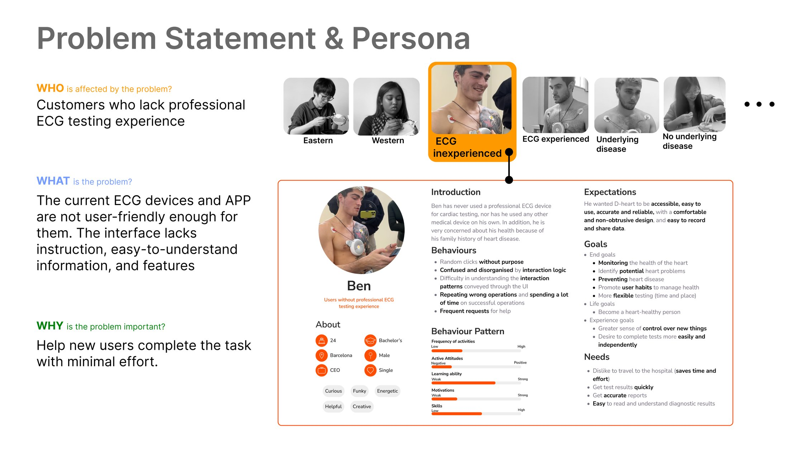
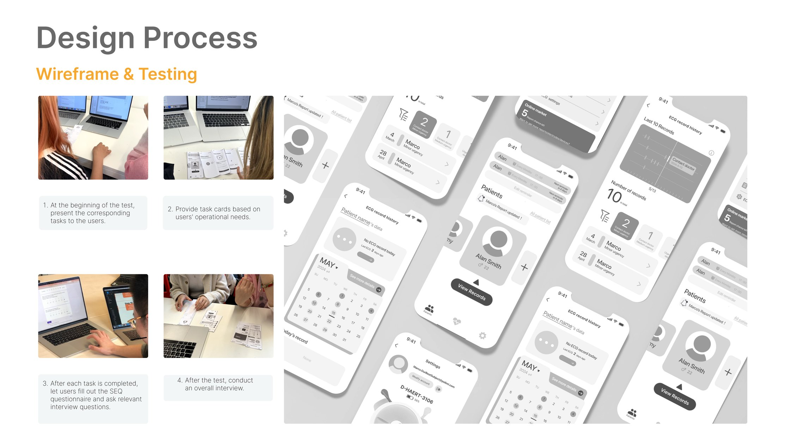
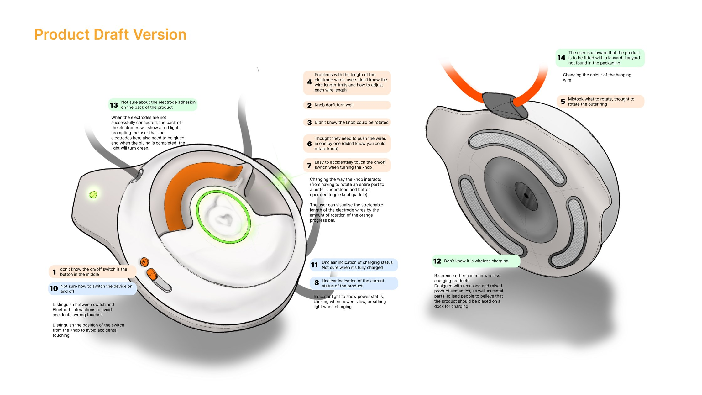
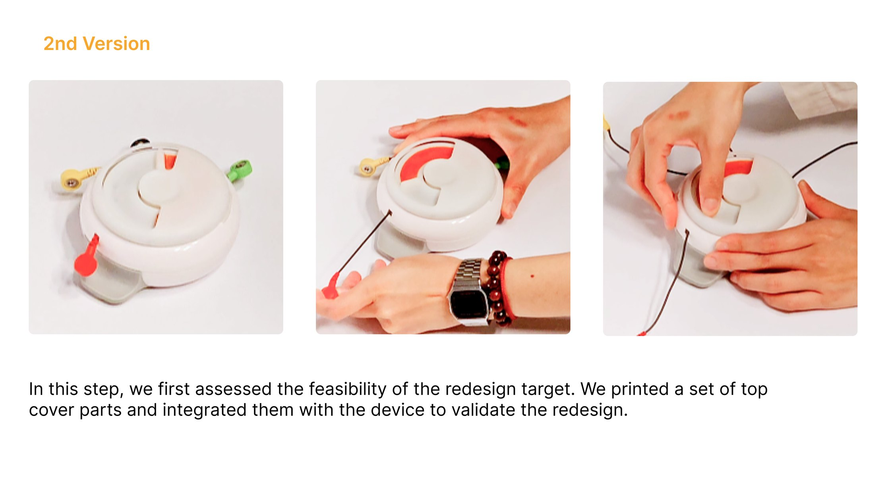
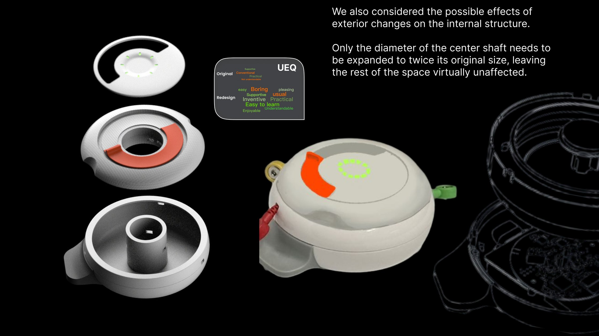

Standalone
Users buy D-heart primarily to monitor or prevent health issues of their own. They typically use it alone, and rarely share it with anyone.
D-heart is a hospital-grade portable electrocardiograph: users take their own ECG and receive a report from a cardiologist. In a university–enterprise collaboration between Politecnico di Milano and D-heart, our team analysed that experience and redesigned the interface around the people it was actually reaching, who are users with no clinical training, taking a reading alone.

The company was selling to customers who had never performed a professional ECG test. The existing device and app assumed otherwise.
The interface offered no instruction, no plain-language explanation of what was on screen, and nothing that helped a first-time user finish the task with minimal effort. Our goal was to keep the product competitive by making it usable by the audience it was already reaching, through research rather than assertion.
01 / The challenge
An ECG reading is only useful if it is taken correctly. That puts the whole burden of accuracy on a user who has never done it before, usually alone, often worried about their heart.
Current ECG devices and apps were not user-friendly enough for this audience. The interface lacked instruction, lacked easy-to-understand information, and lacked the features that would let a new user complete the task with minimal effort.
02 / Explorative research
I studied the key process and the usability scenarios around it, rather than the interface in isolation.

Users buy D-heart primarily to monitor or prevent health issues of their own. They typically use it alone, and rarely share it with anyone.
Users buy it for convenient ECG monitoring of themselves and others, acting both as care receivers and as caregivers within their families.
Evaluate the overall experience with UX research methods, identify the key pain points and usability obstacles during use, and propose improvements grounded in both.
Method
Three passes, each producing evidence the next one had to act on, so the redesign was answerable to measurements rather than to taste.
I ran usability testing and multi-angle user research on the existing product, covering system usability, user experience, interaction difficulty and emotional response, alongside the team’s heuristic evaluation and cognitive walkthrough. That established what was actually going wrong, and for whom.
I used tree testing and card sorting to surface the mental model users already had. The team built a linear workflow and information architecture on it, and I ran a second tree test to check the new structure held.
Five-second tests settled the visual direction and A/B testing resolved the points where opinion split. I then repeated the original usability measures, so the before and after were directly comparable rather than merely asserted.
Findings
Cross-referencing the task data against the emotional evaluation put each complaint on a specific step, rather than leaving it as a general impression that the app was hard.

When users did something wrong in T5 they could not find a way back, because the return button was not obvious. The system rarely confirmed what had just happened.
In T2 every user made mistakes, misread the screen and retried. In T8 the information architecture ran contrary to what users expected to find.
Almost every subject repeated mistakes on T1, which was password and verification-code entry, before reaching the actual product. In T4 they could not work out how to switch patient.
Problem statement

Who: customers who lack professional ECG testing experience. What: the current devices and app are not user-friendly enough for them; the interface lacks instruction, easy-to-understand information and supporting features. Why it matters: a new user has to be able to complete the task with minimal effort, or the reading does not happen at all.
03 / Design process

Prototyping was the most effective way to gain meaningful feedback.
Our focus is on the entire interaction process, including product design.
04 / Beyond the interface
The device itself decides whether a first reading succeeds. How the knob turns, how the electrode wires pay out, whether you can tell it is charging. The same testing that found the app’s failures found the hardware’s.

The central move was the knob: from a part you had to rotate whole, to a toggle paddle that reads as something you push. The rotation then earned a second job, which is an orange progress arc showing how much electrode wire is still available to pay out, which was the problem users could not otherwise see. The switch moved away from the knob so the two could not be confused, and a breathing light took over power state: blinking when low, breathing while charging.


05 / Results
The redesigned app features a clean, clutter-free interface, making it easier for users to navigate and reach the features that matter.
Both percentages are projections estimated from the usability sessions rather than figures measured after release. They describe the expected effect of the redesigned onboarding and of the added personalisation, set against how the original app performed on the same tasks.